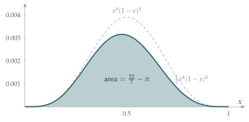

STEP I 1997, Question 6
Read the question before you go on. It is in the STEP Support Programme’s question database: step.maths.org/questions/97-s1-q6
The hook
Generations of students have been told that \(\pi\) is “about \(\frac{22}{7}\)”. It is a very good approximation: \(\frac{22}{7} = 3.142857\ldots\) and \(\pi = 3.141592\ldots\). But is \(\frac{22}{7}\) too big or too small? And can you prove it, without simply looking up the digits of \(\pi\), which someone else had to compute?
This question gives one of the most elegant proofs in all of mathematics. A single integral of a positive function, which therefore must be positive, turns out to equal exactly \(\frac{22}{7} - \pi\). Positive integrand, positive integral, so \(\frac{22}{7} > \pi\). The whole proof fits in a few lines, and it is so neat that it appears as a puzzle on mathematics T-shirts.
Before you start
Why does \(\pi\) come out of \(\int_0^1 \frac{\text{polynomial}}{1+x^2}\,\mathrm{d}x\)? Which simple integral of this form gives \(\pi\) on its own?
\(\int_0^1 \frac{\mathrm{d}x}{1+x^2} = \arctan 1 = \frac\pi4\). When you divide a polynomial by \(1 + x^2\), you get a polynomial quotient (which integrates to a rational number) plus a constant remainder over \(1 + x^2\) (which integrates to a rational multiple of \(\pi\)). The first part of the question asks you to do exactly that division.
Working it through
Stage 1 Polynomial division
First expand: \((1 - x)^4 = 1 - 4x + 6x^2 - 4x^3 + x^4\), so \[x^4(1-x)^4 = x^8 - 4x^7 + 6x^6 - 4x^5 + x^4.\]
Divide by \(x^2 + 1\), either by long division or by comparing coefficients. What is the remainder?
Comparing coefficients in \((a_6x^6 + \cdots + a_0)(x^2 + 1) + b\), from the top: \(a_6 = 1\); \(a_5 = -4\); \(a_4 + a_6 = 6\), so \(a_4 = 5\); \(a_3 + a_5 = -4\), so \(a_3 = 0\); \(a_2 + a_4 = 1\), so \(a_2 = -4\); \(a_1 + a_3 = 0\), so \(a_1 = 0\); \(a_0 + a_2 = 0\), so \(a_0 = 4\); and finally \(a_1 = 0\) (the coefficient of \(x\)) and \(a_0 + b = 0\), so \(b = -4\). That is, \[x^4(1-x)^4 = (x^6 - 4x^5 + 5x^4 - 4x^2 + 4)(x^2 + 1) - 4.\]
Stage 2 The integral
Dividing by \(1 + x^2\), \[\frac{x^4(1-x)^4}{1+x^2} = x^6 - 4x^5 + 5x^4 - 4x^2 + 4 - \frac{4}{1+x^2},\] so \[\int_0^1 \frac{x^4(1-x)^4}{1+x^2}\,\mathrm{d}x = \frac17 - \frac46 + \frac55 - \frac43 + 4 - 4\cdot\frac\pi4 = \frac17 - \frac23 + 1 - \frac43 + 4 - \pi.\] Now \(-\frac23 - \frac43 = -2\), so the rational part is \(\frac17 + 3 = \frac{22}{7}\), and the integral is \(\frac{22}{7} - \pi\).■
Stage 3 Bounding the integral
The integrand is positive on \((0, 1)\), so \(\frac{22}{7} > \pi\) at once. To get a lower bound for \(\pi\) we need an upper bound for the integral. How big can \(\frac{1}{1+x^2}\) be on \([0, 1]\)?
On \([0, 1]\), \(1 \leq 1 + x^2 \leq 2\), so \[\tfrac12 x^4(1-x)^4 \leq \frac{x^4(1-x)^4}{1+x^2} \leq x^4(1-x)^4,\] with strict inequality except at the endpoints.
Evaluate \(\int_0^1 x^4(1-x)^4\,\mathrm{d}x\), and finish the proof.
Integrating the expansion term by term, \[\int_0^1 x^4(1-x)^4\,\mathrm{d}x = \frac19 - \frac48 + \frac67 - \frac46 + \frac15 = \frac{1}{630}.\] (Over the common denominator \(2520\): \(280 - 1260 + 2160 - 1680 + 504 = 4\), and \(\frac{4}{2520} = \frac{1}{630}\).) So \[0 < \frac{22}{7} - \pi < \frac{1}{630},\] which is \(\frac{22}{7} > \pi > \frac{22}{7} - \frac{1}{630}\).■
Numerically, \(\frac{22}{7} - \frac{1}{630} = 3.14127\ldots\), so we have proved \(3.1412 < \pi < 3.1429\). Using the left-hand inequality as well, \(\frac{1}{1260} < \frac{22}{7} - \pi\), which improves the upper bound to \(\pi < 3.14207\).

Looking back
Positivity proves inequalities. The integral of a positive function is positive. Once the integral was identified as \(\frac{22}{7} - \pi\), the inequality was immediate.
Small integrands, sharp bounds. The factor \(x^4(1-x)^4\) is tiny on \([0, 1]\) (at most \(\frac{1}{256}\)), which makes the integral small and the bound sharp.
Rational plus a multiple of \(\pi\). As in Section 2.9, an integral of the form “rational number \(+\) rational multiple of a constant” that is small gives a good rational approximation to the constant.
What’s really going on
Archimedes proved \(\frac{223}{71} < \pi < \frac{22}{7}\) around 250 BC by computing the perimeters of \(96\)-sided polygons inside and outside a circle (compare the polygons of Section 2.5). The integral proof is much more recent. It was published by D. P. Dalzell in 1944, and became famous when it was set as a problem in the 1968 Putnam competition for American undergraduates. Its charm is that it needs no numerical work at all: the inequality \(\frac{22}{7} > \pi\) drops out of the fact that an integral of a positive function is positive.
Better approximations from the same idea
The method generalises. With \(x^8(1-x)^8\) in place of \(x^4(1-x)^4\), the same division gives \[\int_0^1 \frac{x^8(1-x)^8}{1+x^2}\,\mathrm{d}x = 4\pi - \frac{188684}{15015},\] which proves \(\pi > \frac{47171}{15015} = 3.1415917\ldots\), correct to six significant figures. In 2009 Stephen Lucas found families of integrals of this kind with non-negative integrands that prove inequalities for other famous approximations, including \(\frac{355}{113}\), which is correct to seven significant figures.
Approximations and irrationality
Why does \(\pi\) have such good fractional approximations as \(\frac{22}{7}\) and \(\frac{355}{113}\)? Every irrational number has infinitely many fractions \(\frac pq\) within \(\frac{1}{q^2}\) of it, and \(\pi\) happens to have some exceptionally good ones early on, because its continued fraction \([3; 7, 15, 1, 292, \ldots]\) contains the large entry \(292\) (see Section 2.2). Integrals like the one in this question, made smaller and smaller, are the starting point for proofs that numbers cannot be approximated too well by fractions, and so are irrational: Ivan Niven’s famous one-page proof that \(\pi\) is irrational (1947) uses integrals of \(\frac{x^n(1-x)^n}{n!}\sin(\pi x)\), the trigonometric cousins of those in Section 2.9.
The thinking skill
To prove \(A > B\), find a positive function whose integral is \(A - B\).
This turns an inequality into an identity plus an obvious fact. It is one of the most useful tricks in analysis, and the same idea, with sums of squares instead of integrals, proved AM–GM in Section 3.2.
Try this next
Check the numbers. Compute \(\frac{22}{7} - \pi\) to four significant figures and confirm that it lies between \(\frac{1}{1260}\) and \(\frac{1}{630}\).
A Beta integral. Use the formula \(\int_0^1 x^n(1-x)^n\,\mathrm{d}x = \frac{(n!)^2}{(2n+1)!}\) (proved in Section 4.4) to check that \(\int_0^1 x^4(1-x)^4\,\mathrm{d}x = \frac{1}{630}\).
A lower approximation. Show that \[\int_0^1 \frac{x(1-x)^2}{1+x^2}\,\mathrm{d}x = \frac\pi2 - \frac32 \quad\text{and}\quad \int_0^1 \frac{x^2(1-x)^4}{1+x^2}\,\mathrm{d}x = \pi - \frac{47}{15},\] and deduce that \(\pi > 3\) and \(\pi > \frac{47}{15}\). Why are these less accurate than \(\frac{22}{7}\)?
Going further. harder Verify the identity for \(\int_0^1 \frac{x^8(1-x)^8}{1+x^2}\,\mathrm{d}x\) given above. (A computer algebra system will do the division; the point is to see that the remainder is \(16\), giving \(4\pi\).)
Further reading
Petr Beckmann, A History of \(\pi\) (St Martin’s Press). Archimedes’ polygon method in detail, and much else.
Stephen Lucas, “Approximations to \(\pi\) derived from integrals with nonnegative integrands”, American Mathematical Monthly 116 (2009). Short and readable.
Ivan Niven, Irrational Numbers (Mathematical Association of America). Includes Niven’s proof that \(\pi\) is irrational.